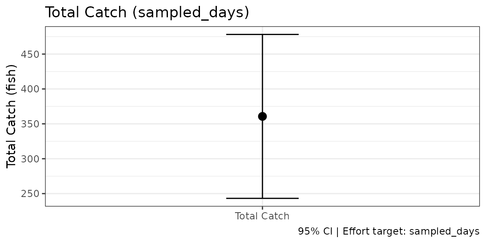

What is a Bus-Route Survey?
A bus-route survey visits multiple access points (sites) in a fixed route, called a circuit. Unlike an access-point creel survey that stations an interviewer at one location for the day, a bus-route crew travels the circuit repeatedly, counting and interviewing anglers at each site as they pass through.
Sites are not weighted equally. The crew visits every site on each pass but waits longer at busier sites (Jones & Pollock 2012, Box 19.3), so a party at a busy site is more likely to be seen. A site’s weight is the share of the circuit the crew spends there: its wait divided by the time to complete the whole circuit, travel included (Robson & Jones 1989; Pollock et al. 1994, eq. 15.10). Inverse weighting by that share is what makes the estimate unbiased.
Two types of data are collected during each visit:
-
Enumeration counts — every angler party at the site
is counted (
n_counted). -
Interviews — a subset of parties is interviewed to
collect effort and catch data (
n_interviewed).
The ratio n_counted / n_interviewed (the enumeration
expansion factor) scales the interviewed catch and effort up to
represent all parties at the site, including those not interviewed.
Without this expansion, busy sites are systematically underrepresented
in the total estimate.
The estimator is the bus-route design of Robson & Jones (1989), as set out in Pollock et al. (1994, section 15.5.3). It is written in the general Horvitz-Thompson form of Jones & Pollock (2012, Chapter 19).
Key Concepts
Inclusion Probability (πᵢ)
The inclusion probability πᵢ is the probability that a given sampling unit (site × period combination) is included in the sample. For a two-stage bus-route design:
where p_period is the probability that the period
containing the visit is sampled, and p_site is the site’s
weight within the circuit. It can be given in two ways:
-
wait_timeandcircuit_time, for a route that visits every site on each pass.p_siteis thenwait_time / circuit_time. These shares add up to less than 1 whenever the route has travel time, and that is correct: no party can be seen while the crew is driving. -
p_site, the probability that a pass selects the site, for a design in which each pass visits a randomly chosen site. These probabilities add up to 1 within a circuit.
Do not rescale wait times so that they add up to 1. That divides by the total wait rather than the circuit time, and every total comes out too low by the share of the circuit spent travelling.
The inclusion probability πᵢ belongs to the sampling design, not to a site or its anglers. Specify it when designing the survey; do not compute it from the interview data.
Enumeration Counts
During each circuit pass, the crew counts every visible angler party
at the site (n_counted) and then interviews as many as
possible (n_interviewed). When not all parties are
interviewed, the expansion factor
rescales the interviewed data so it represents all parties. If all parties are interviewed (n_counted = n_interviewed), the expansion is 1 and no adjustment is needed, as in the example below.
Horvitz-Thompson Estimator
The total effort estimator (Jones & Pollock 2012, Eq. 19.4) is:
where is the enumeration-expanded effort for interview i. Each site’s contribution is weighted by the reciprocal of its inclusion probability. A site sampled with probability 0.20 receives weight 5 — five times the weight of a site sampled with probability 1.0. This inverse-probability weighting is what makes the estimator statistically unbiased.
The harvest estimator (Jones & Pollock 2012, Eq. 19.5) follows the same structure:
Choosing the Site Weights
Some implementations fix for every site. That is not an inclusion probability of the design, and each site’s contribution is then off by the ratio of 0.5 to its true .
tidycreel computes
from the sampling frame you give creel_design(), with
p_site either supplied directly or computed as
wait_time / circuit_time. The test suite reproduces the
bus-route effort and catch examples in Pollock et al. (1994, Tables
15.16 and 15.17) from wait and circuit times. Malvestuto (1996, Box
20.6) uses the same inverse-probability rule in its access-point and
roving examples, and the test suite reproduces its Examples 1 and 2.
Step-by-Step Example
We demonstrate the full bus-route workflow on a small constructed example: a four-site, single-circuit survey with 15 interviews over four days. The numbers are invented, so the totals below are this example’s own arithmetic, not published figures. The test suite checks the same estimator against a published example, Pollock et al. (1994, Tables 15.16 and 15.17); the equations page works through it.
Step 1: Define the Sampling Design
The sampling frame lists the four sites, the crew’s scheduled wait at
each, and the time to drive the whole circuit once, waits included: 400
minutes, of which 200 are waits and 200 are travel. Each day the crew
works either the morning or the afternoon, chosen with equal
probability, so p_period = 0.5.
library(tidycreel)
# Sampling frame: 4 sites, 1 circuit. Waits are longer at busier sites.
sampling_frame <- data.frame(
site = c("A", "B", "C", "D"),
circuit = "circ1",
wait_min = c(60, 50, 80, 10), # 200 min of waits
circuit_min = 400, # whole circuit, travel included
p_period = 0.50 # morning or afternoon, equally likely
)
# Site weight: p_site = wait / circuit time; pi_i = p_site * p_period
# Site A: 60 / 400 = 0.150; x 0.5 = 0.0750
# Site B: 50 / 400 = 0.125; x 0.5 = 0.0625
# Site C: 80 / 400 = 0.200; x 0.5 = 0.1000
# Site D: 10 / 400 = 0.025; x 0.5 = 0.0125
# Survey calendar: 4 weekdays
calendar <- data.frame(
date = as.Date(c("2024-06-01", "2024-06-02", "2024-06-03", "2024-06-04")),
day_type = "weekday"
)
# Build the bus-route design
design <- creel_design(
calendar,
date = date,
strata = day_type,
survey_type = "bus_route",
sampling_frame = sampling_frame,
site = site,
circuit = circuit,
wait_time = wait_min,
circuit_time = circuit_min,
p_period = p_period
)
print(design)
#>
#> ── Creel Survey Design ─────────────────────────────────────────────────────────
#> Type: "bus_route"
#> Date column: date
#> Strata: day_type
#> Calendar: 4 days (2024-06-01 to 2024-06-04)
#> day_type: 1 level
#> Counts: "none"
#> Interviews: "none"
#> Sections: "none"
#>
#> ── Bus-Route Design ──
#>
#> Sites: 4, Circuits: 1
#> Sampling probabilities (pi_i = p_site * p_period):
#> A [circ1]: p_site=0.15, p_period=0.5, pi_i=0.075
#> B [circ1]: p_site=0.125, p_period=0.5, pi_i=0.0625
#> C [circ1]: p_site=0.2, p_period=0.5, pi_i=0.1
#> D [circ1]: p_site=0.025, p_period=0.5, pi_i=0.0125The design object stores the sampling frame and precomputes πᵢ for each site×circuit combination. The four site shares add up to 0.5, not 1: half the circuit is spent driving, when no party can be seen. Site C has the longest wait and therefore the highest πᵢ (0.10), so each of its parties stands for fewer unseen ones than a party at Site D (πᵢ = 0.0125).
Step 2: Attach Interview Data
Each row of interview data represents one interviewed party. The
n_counted and n_interviewed columns record how
many parties were at the site vs. how many were actually interviewed. In
this example both are equal (no expansion needed), but the columns must
still be supplied for bus-route designs.
Each party’s effort is recorded here as angler-hours: the hours
fished times the number of anglers in the party. Because the column
already counts every angler, n_anglers = 1 tells
add_interviews() to take each value as it stands. If your
sheet records hours per party and party size separately, pass the hours
as effort and the party size as n_anglers
instead, and tidycreel multiplies them.
# 15 interviews across 4 sites and 4 days
# Site A: 4 interviews (all 4 parties interviewed)
# Site B: 3 interviews (all 3 parties)
# Site C: 6 interviews (all 6 parties) — highest effort site
# Site D: 2 interviews (all 2 parties)
interviews_raw <- data.frame(
date = as.Date(c(
"2024-06-01", "2024-06-01", "2024-06-02", "2024-06-02", # Site A
"2024-06-01", "2024-06-02", "2024-06-03", # Site B
"2024-06-01", "2024-06-02", "2024-06-03", # Site C (rows 1-3)
"2024-06-03", "2024-06-04", # Site C (rows 4-5)
"2024-06-03", "2024-06-04", # Site D
"2024-06-03" # Site C (row 6)
)),
day_type = "weekday",
site = c(
"A", "A", "A", "A",
"B", "B", "B",
"C", "C", "C",
"C", "C",
"D", "D",
"C"
),
circuit = "circ1",
angler_hours = c(
7.5, 7.5, 7.5, 7.5, # Site A: 4 x 7.5 = 30 h total
20.0 / 3, 20.0 / 3, 20.0 / 3, # Site B: 3 x 6.67 = 20 h total
57.5 / 6, 57.5 / 6, 57.5 / 6, # Site C rows 1-3
57.5 / 6, 57.5 / 6, # Site C rows 4-5
2.5, 2.5, # Site D: 2 x 2.5 = 5 h total
57.5 / 6 # Site C row 6: total = 57.5 h
),
fish_kept = c(
1L, 0L, 1L, 0L,
1L, 0L, 1L,
1L, 1L, 0L,
1L, 0L,
0L, 0L,
1L
),
fish_caught = c(
2L, 1L, 1L, 1L,
2L, 1L, 1L,
2L, 1L, 1L,
1L, 1L,
1L, 1L,
1L
),
n_counted = c(
4L, 4L, 4L, 4L,
3L, 3L, 3L,
6L, 6L, 6L,
6L, 6L,
2L, 2L,
6L
),
n_interviewed = c(
4L, 4L, 4L, 4L,
3L, 3L, 3L,
6L, 6L, 6L,
6L, 6L,
2L, 2L,
6L
),
trip_status = "complete"
)
# Attach interviews — pi_i is joined automatically from the sampling frame
design <- add_interviews(
design,
interviews_raw,
effort = angler_hours,
catch = fish_caught,
harvest = fish_kept,
n_counted = n_counted,
n_interviewed = n_interviewed,
trip_status = trip_status,
n_anglers = 1
)
#> ℹ Added 15 interviews: 15 complete (100%), 0 incomplete (0%)
print(design)
#>
#> ── Creel Survey Design ─────────────────────────────────────────────────────────
#> Type: "bus_route"
#> Date column: date
#> Strata: day_type
#> Calendar: 4 days (2024-06-01 to 2024-06-04)
#> day_type: 1 level
#> Counts: "none"
#> Interviews: 15 observations
#> Type: "access"
#> Catch: fish_caught
#> Effort: angler_hours
#> Harvest: fish_kept
#> Trip status: 15 complete, 0 incomplete
#> Survey: <survey.design2> (constructed)
#> Sections: "none"
#>
#> ── Bus-Route Design ──
#>
#> Sites: 4, Circuits: 1
#> Sampling probabilities (pi_i = p_site * p_period):
#> A [circ1]: p_site=0.15, p_period=0.5, pi_i=0.075
#> B [circ1]: p_site=0.125, p_period=0.5, pi_i=0.0625
#> C [circ1]: p_site=0.2, p_period=0.5, pi_i=0.1
#> D [circ1]: p_site=0.025, p_period=0.5, pi_i=0.0125
#>
#> ── Enumeration Counts ──
#>
#> (n_counted observed, n_interviewed interviewed, expansion =
#> n_counted/n_interviewed)
#> A [circ1]: counted=16, interviewed=16, expansion=1
#> B [circ1]: counted=9, interviewed=9, expansion=1
#> C [circ1]: counted=36, interviewed=36, expansion=1
#> D [circ1]: counted=4, interviewed=4, expansion=1add_interviews() joins πᵢ from the sampling frame to
each interview row (stored as .pi_i) and computes the
enumeration expansion factor
(.expansion = n_counted / n_interviewed). These are used
internally by the estimation functions.
Step 3: Estimate Effort
estimate_effort() dispatches to the bus-route estimator
and computes
.
# Estimate total angler-hours
effort_est <- estimate_effort(design)
print(effort_est)
#>
#> ── Creel Survey Estimates ──────────────────────────────────────────────────────
#> Method: Total
#> Variance: Taylor linearization
#> Confidence level: 95%
#> Effort target: sampled_days
#> Unit: angler-hours
#>
#> # A tibble: 1 × 5
#> estimate se ci_lower ci_upper n
#> <dbl> <dbl> <dbl> <dbl> <int>
#> 1 1695 248. 1208. 2182. 15
# Inspect per-site contributions to the total
site_contribs <- get_site_contributions(effort_est)
print(site_contribs)
#> # A tibble: 15 × 5
#> site circuit e_i pi_i e_i_over_pi_i
#> <chr> <chr> <dbl> <dbl> <dbl>
#> 1 A circ1 7.5 0.075 100
#> 2 A circ1 7.5 0.075 100
#> 3 A circ1 7.5 0.075 100
#> 4 A circ1 7.5 0.075 100
#> 5 B circ1 6.67 0.0625 107.
#> 6 B circ1 6.67 0.0625 107.
#> 7 B circ1 6.67 0.0625 107.
#> 8 C circ1 9.58 0.1 95.8
#> 9 C circ1 9.58 0.1 95.8
#> 10 C circ1 9.58 0.1 95.8
#> 11 C circ1 9.58 0.1 95.8
#> 12 C circ1 9.58 0.1 95.8
#> 13 D circ1 2.5 0.0125 200
#> 14 D circ1 2.5 0.0125 200
#> 15 C circ1 9.58 0.1 95.8The site contributions table shows exactly how each site’s effort feeds into the total. Site C (πᵢ = 0.10, observed effort 57.5 h) contributes 57.5 / 0.10 = 575 angler-hours, the largest single-site contribution. Site D (πᵢ = 0.0125, observed effort 5 h) contributes 5 / 0.0125 = 400 angler-hours: the crew waits there for only 10 minutes of each 400, so each party seen stands for many that were not.
The total is over the four sampled days. Bus-route totals refuse
target = "stratum_total" and "period_total"
(the expansion to unsampled days is not implemented).
Step 4: Estimate Catch and Harvest
estimate_harvest_rate() gives fish kept per angler-hour.
The totals apply the same Horvitz-Thompson logic as effort, dividing
each party’s fish by its inclusion probability and summing.
# Fish kept per angler-hour
harvest_rate <- estimate_harvest_rate(design)
print(harvest_rate)
#>
#> ── Creel Survey Estimates ──────────────────────────────────────────────────────
#> Method: Ratio-of-Means HPUE
#> Variance: Taylor linearization
#> Confidence level: 95%
#> Unit: fish/angler-hour
#>
#> # A tibble: 1 × 5
#> estimate se ci_lower ci_upper n
#> <dbl> <dbl> <dbl> <dbl> <int>
#> 1 0.0582 0.0160 0.0269 0.0896 15
# Total fish kept (harvest) and total fish caught (kept + released)
harvest_est <- estimate_total_harvest(design)
print(harvest_est)
#>
#> ── Creel Survey Estimates ──────────────────────────────────────────────────────
#> Method: Total Harvest (Horvitz-Thompson)
#> Variance: Taylor linearization
#> Confidence level: 95%
#> Effort target: sampled_days
#> Unit: fish
#>
#> # A tibble: 1 × 5
#> estimate se ci_lower ci_upper n
#> <dbl> <dbl> <dbl> <dbl> <int>
#> 1 98.7 35.7 28.8 169. 15
catch_est <- estimate_total_catch(design)
print(catch_est)
#>
#> ── Creel Survey Estimates ──────────────────────────────────────────────────────
#> Method: Total Catch (Horvitz-Thompson)
#> Variance: Taylor linearization
#> Confidence level: 95%
#> Effort target: sampled_days
#> Unit: fish
#>
#> # A tibble: 1 × 5
#> estimate se ci_lower ci_upper n
#> <dbl> <dbl> <dbl> <dbl> <int>
#> 1 361. 59.9 243. 478. 15Step 5: Results as Data
Each estimate converts to a tibble with its method, variance method
and unit as columns, ready for dplyr or a report table, and
plots with its confidence interval:
tibble::as_tibble(catch_est)
#> # A tibble: 1 × 10
#> estimate se ci_lower ci_upper n method variance_method conf_level
#> <dbl> <dbl> <dbl> <dbl> <int> <chr> <chr> <dbl>
#> 1 361. 59.9 243. 478. 15 ht-total-ca… taylor 0.95
#> # ℹ 2 more variables: effort_target <chr>, unit <chr>
ggplot2::autoplot(catch_est)
Checking the Arithmetic
Each site contributes its observed effort divided by its inclusion probability:
| Site | wait / circuit | πᵢ | e_i (h) | e_i / πᵢ |
|---|---|---|---|---|
| A | 60 / 400 | 0.0750 | 30.0 | 400 |
| B | 50 / 400 | 0.0625 | 20.0 | 320 |
| C | 80 / 400 | 0.1000 | 57.5 | 575 |
| D | 10 / 400 | 0.0125 | 5.0 | 400 |
| Total | 1,695 |
Rescaling the waits to add up to 1 (60/200, 50/200, …) would have
given 847.5, half the total, because half the circuit is travel. That is
the error the wait_time and circuit_time
arguments exist to prevent.
References
Jones, C. M., & Pollock, K. H. (2012). Recreational angler survey methods: estimation of effort, harvest, and released catch. Chapter 19 in Fisheries Techniques (3rd ed.), pp. 883–919. American Fisheries Society.
Malvestuto, S. P. (1996). Sampling the recreational creel. Chapter 20 in Fisheries Techniques (2nd ed.), pp. 591–623. American Fisheries Society.
Pollock, K. H., Jones, C. M., & Brown, T. L. (1994). Angler survey methods and their applications in fisheries management. American Fisheries Society Special Publication 25.
Robson, D., & Jones, C. M. (1989). The theoretical basis of an access site angler survey design. Biometrics, 45, 83–98.